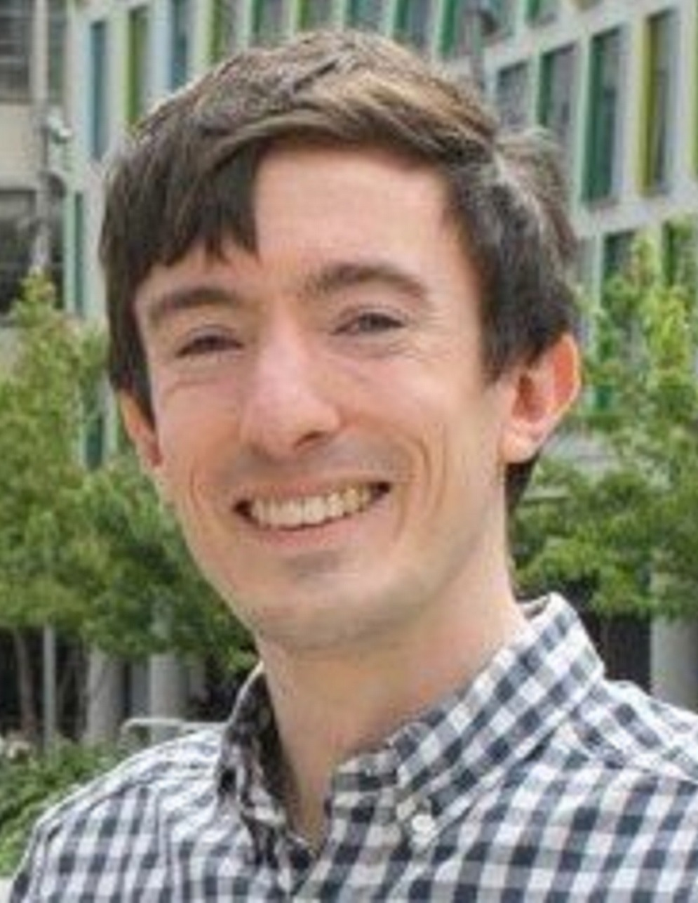
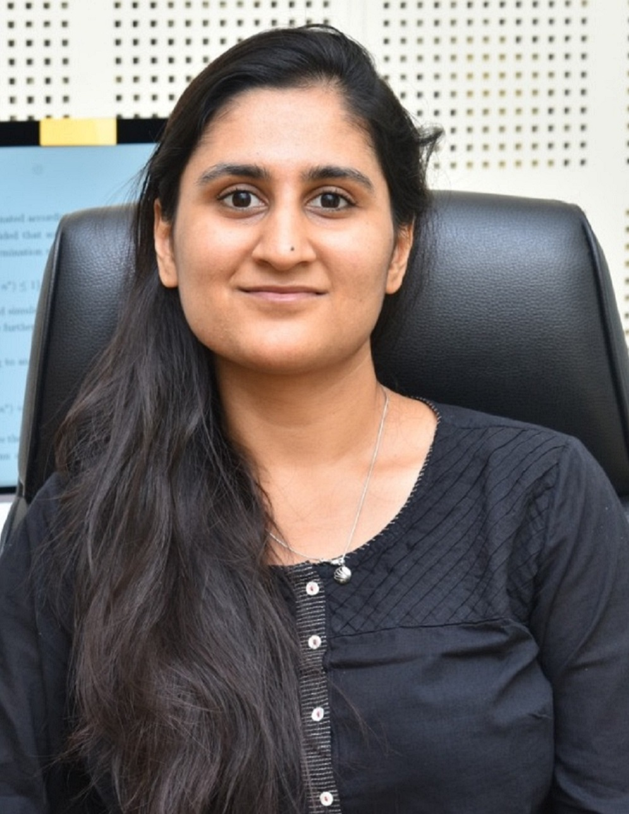
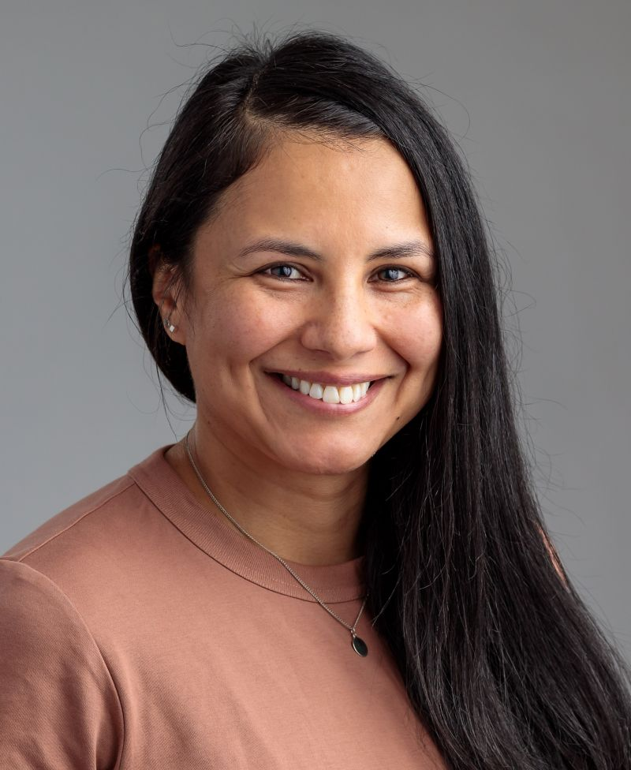

Current BayesComp-ISBA board members
David Rossell. Section Chair 2022-2023.

David is a Ramón y Cajal Fellow at the Dept. of Economics & Business of Universitat Pompeu Fabra in Barcelona. David's research interests broadly include high-dimensional inference, experimental design, dimensionality reduction and applied statistical modeling, with emphasis on the Bayesian approach. For more information, visit his website.
Chris Oates. Section Chair-Elect 2022-2023.
Chris is a Professor of Statistics at Newcastle University and a Turing Fellow / Group Leader on the Porgramme for Data-Centric Engineering at the Alan Turing Institute, UK. Chris is interested in computational statistics, kernel methods, machine learning, and uncertainty quantification. For more information, visit his website.
Dootika Vats. Program Chair 2022-2023.
Dootika is an Assistant Professor in the Department of Mathematics and Statistics at the Indian Insitute of Technology, Kanpur. Dootika's work is in the general area of Bayesian computation and specifically focuses on Markov chain Monte Carlo algorithms. For more information, visit her website.
Brenda Betancourt. Treasurer 2023-2024.
Brenda is a Senior Statistician at NORC, University of Chicago. Brenda specializes on statistical methods for record linkage, data merging and deduplication. For more information, visit her website.
Emilia Pompe. Secretary 2023-2024.
Emilia is a Data Scientist at Google, Zürich. Emilia's expertise is in Markov chain Monte Carlo and bootstrapping for Bayesian inference. Before joining Google, Emilia obtained her PhD in Statistics from the University of Oxford.